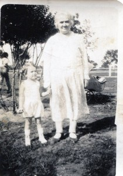
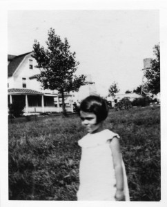

Growing Up
Click on the pictures to enlarge.
I grew up in New York City, where there were many places that made me happy. I had the biggest garden in the world — Central Park, which I shared with hundreds of people. I climbed to my favorite branch of an oak tree and there I read my books. I often went to the library. The librarian was kind. She picked out books for me and I loved her.
{kind=link}
My father died when I was five and my mother was not able to take care of my older sister Janet or me. We were sent to live with my grandparents. I loved my Grandma Bertha.
{kind=link}

Grandma Bertha and sister Janet
She sang Russian songs all day and hugged me a lot. My grandfather was something else. He was so strict and scolded us all the time. I was afraid of him.
{kind=link}

A sad young Annie
Every summer, Janet and I went to a sleepaway camp in the Catskill Mountains. I was seven the first summer. I loved everything about camp. I liked swimming, hiking, and singing songs around the campfire. And I loved making up stories and telling them to the other campers.
I went to the High School of Music and Art in Manhattan. I loved all the arts. But most of all, I loved to write.